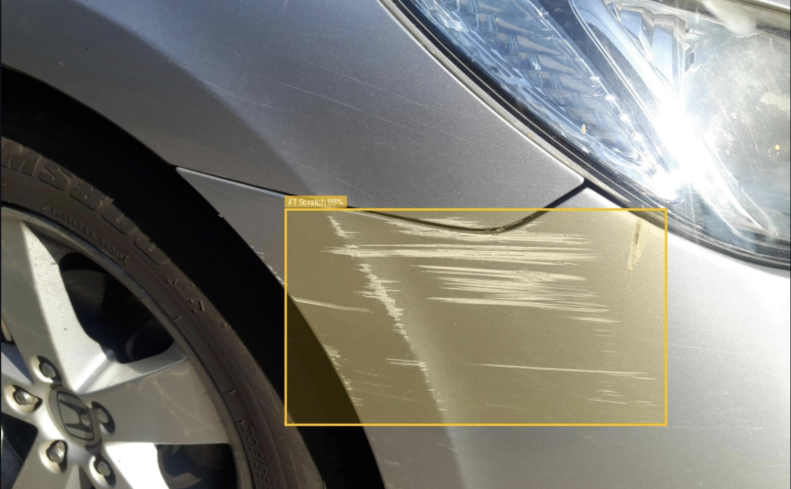

Free AI Car Damage Detector
Upload a photo of your vehicle and Carithm's AI scans the panel for visible damage — dents, scratches, cracks, broken lights, glass damage and flat tyres — and shows you exactly what it found with bounding boxes and confidence scores.
Useful before you sell, buy, rent, or hand a car back — a fast visual read before anyone else looks closely.
- Free to use
- No account required
- AI-powered visual assessment
Try the AI Car Damage Detector
Upload a clear photo of your vehicle. Carithm's AI analyzes it, highlights every area of visible damage, and gives each one a confidence score in seconds. Supports JPG, PNG and HEIC.

What Can the AI Detect?
- Dents
- Scratches
- Cracks
- Broken headlights
- Broken taillights
- Glass damage
- Flat tyres
Why Use Carithm AI?
- Instant results
- Free
- No account required
- Works from a single photo
- Easy to understand
- Highlights visible damage automatically
How It Works
- Upload a photo of the damaged area.
- The AI analyzes the image, searching for visible damage.
- Review the results — each area of damage is highlighted with a bounding box and confidence score.
Frequently Asked Questions
Is it free?
Yes.
Do I need an account?
No.
Can it detect all damage?
It detects visible damage shown in the uploaded image, including dents, scratches, cracks, broken lights, glass damage and flat tyres.
Can I use it for insurance?
The assessment is intended as an informational visual aid and is not a certified inspection.
What photos work best?
Clear, well-lit images taken close to the damaged area.
Understand the repair before you pay for it
If the damage scan finds something, use these to understand costs and repair intervals for your exact car.